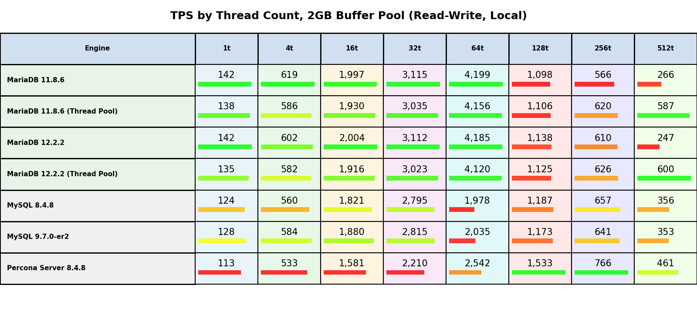
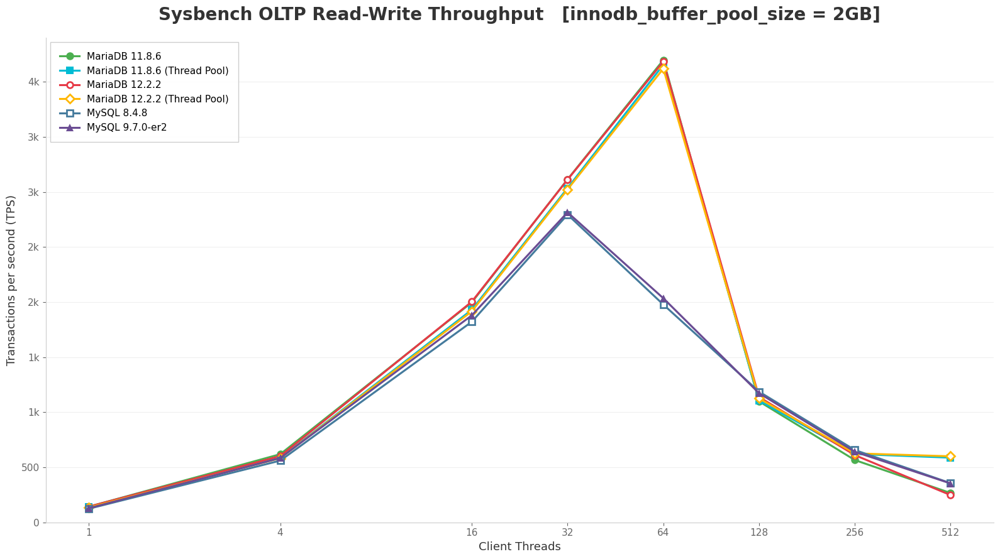
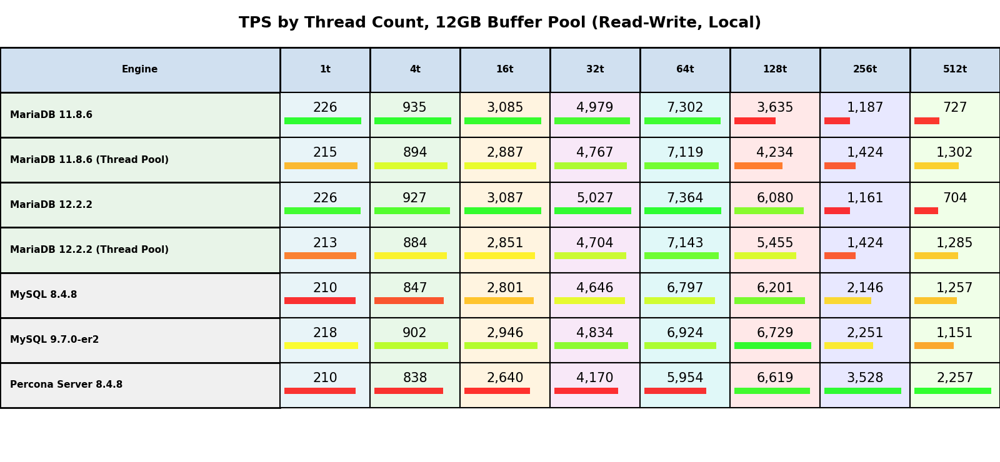
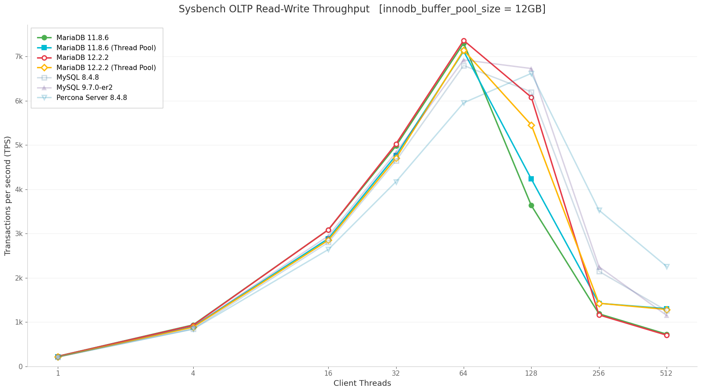
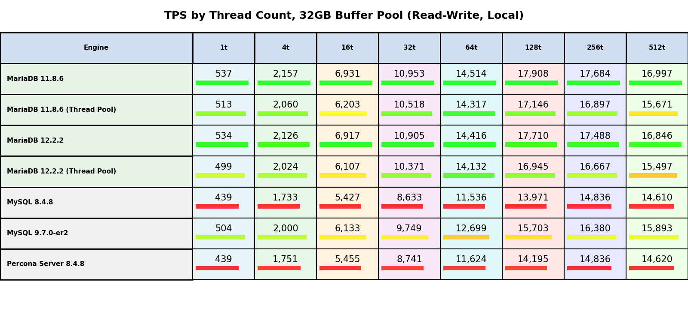
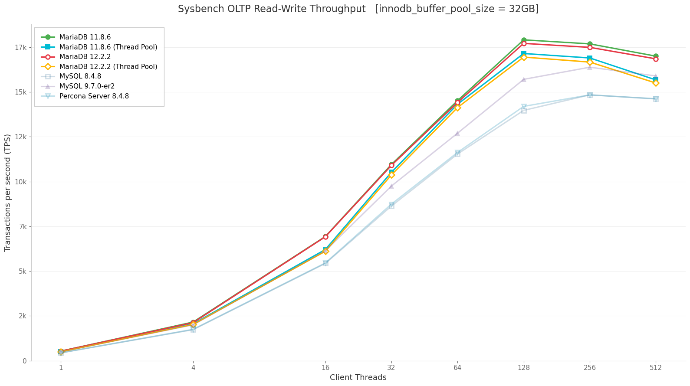

The primary purpose of this benchmark study is to evaluate how the MariaDB Thread Pool feature affects database performance under OLTP (Online Transaction Processing) read-write workloads. This investigation aims to provide empirical data on the performance characteristics of MariaDB servers operating with and without thread pool configuration across various workload conditions.
This analysis seeks to answer the following key questions:
1. Raw TPS Scaling with Thread Count
- How does transaction throughput (TPS) scale as the number of client threads increases from light (single-threaded) to heavily oversubscribed workloads (512 threads)?
- At what concurrency levels does performance plateau or degrade?
2. Thread Pool Performance Impact
- What performance improvements (or degradations) does the MariaDB Thread Pool provide compared to default thread handling?
- Under which concurrency levels is the thread pool most beneficial?
- Are there scenarios where thread pool introduces overhead?
3. Effect of InnoDB Buffer Pool Size
- How does varying the innodb_buffer_pool_size (2 GB, 12 GB, 32 GB) affect throughput?
- What is the performance difference between I/O-bound (2 GB) versus fully buffered (32 GB) workloads?
- Does thread pool effectiveness change across different memory configurations?
4. Version Comparison within MariaDB Family
- How do MariaDB 11.8.6 and MariaDB 12.2.2 compare in terms of raw performance?
- Are there significant differences in thread pool behavior between these versions?
- Which version demonstrates better scalability characteristics?
innodb_buffer_pool_sizethread_pool_size=80, thread_pool_max_threads=2000| Server | Version | Thread Handling | Role |
|---|---|---|---|
| MariaDB | 11.8.6 | Default (one-thread-per-connection) | Primary test subject |
| MariaDB | 11.8.6 | Thread Pool (thread_pool_size=80) |
Primary test subject |
| MariaDB | 12.2.2 | Default (one-thread-per-connection) | Primary test subject |
| MariaDB | 12.2.2 | Thread Pool (thread_pool_size=80) |
Primary test subject |
| MySQL | 8.4.8 | Default | Reference |
| MySQL | 9.7.0-er2 | Default | Reference |
| Percona Server | 8.4.8-8 | Default | Reference |
Note: Reference servers (MySQL and Percona) are included for cross-product performance context but are not the primary focus of this benchmark.
This section summarizes the critical performance insights derived from comprehensive testing across three memory configurations and eight concurrency levels.
Thread Pool performance benefits are strongly correlated with I/O intensity:
| Workload Type | Buffer Pool | I/O Characteristic | Thread Pool Benefit at 512 Threads | Recommended Use Case |
|---|---|---|---|---|
| I/O Bound | 2 GB | Heavy disk access (1:12 ratio) | +121-143% throughput | Strongly recommended |
| Mixed | 12 GB | Partial buffering (1:2 ratio) | +79-83% throughput | Recommended for high concurrency |
| Memory Bound | 32 GB | Fully buffered | -15% to +0% throughput | Limited benefit |
Insight: Thread Pool provides maximum value when I/O wait states are prevalent, allowing efficient thread coordination during disk operations. When workloads are fully memory-resident, the baseline one-thread-per-connection model can handle moderate concurrency effectively.
Thread Pool exhibits a consistent performance profile across all configurations:
Low Concurrency (1-32 threads):
Medium Concurrency (64-128 threads):
High Concurrency (256-512 threads):
MariaDB 11.8.6 vs 12.2.2:
Conclusion: Upgrading from 11.8.6 to 12.2.2 provides baseline improvements, but Thread Pool effectiveness remains consistent across versions.
When to Enable Thread Pool:
✅ Recommended:
❌ Not Recommended:
⚠️ Use with Caution:
Primary Storage (SDA - System Disk)
- /dev/sda1: 1 GB, vfat, mounted at /boot/efi
- /dev/sda2: 100 GB, ext4, mounted at /boot
- /dev/sda3: 793.2 GB, ext4, mounted at / (root)
Secondary Storage (NVMe)
- Speed: 10000 Mb/s (10 Gbps)
- Duplex: Full
--network host (native host networking, no NAT overhead)System performance metrics were collected continuously during each benchmark run:
Each MariaDB engine was run as a Docker container using official images from the mariadb repository. The host network mode was used to avoid bridge networking overhead. A fresh container was started for each engine/tier combination using the following sequence:
1. Stop and remove any existing benchmark container
2. Detect actual server version by connecting and running SELECT VERSION()
3. Generate a version-specific configuration file (see Section 3)
4. Restart the container with the new configuration mounted
5. Wait for the server to become ready (mariadb-admin ping loop)
6. Verify InnoDB buffer pool size matches the intended tier (hard abort on mismatch)
This approach ensured that each test run started with a clean state and the correct configuration parameters were applied before benchmark execution.
With the database size of 24 GB, three InnoDB buffer pool sizes were tested, each representing a distinct workload characteristic:
| Tier (innodb_buffer_pool_size) | Workload Character |
|---|---|
| 2 GB | I/O bound — dataset substantially exceeds buffer pool (1:12 ratio); heavy read amplification |
| 12 GB | Mixed — partial dataset fits in memory (1:2 ratio); realistic production scenario |
| 32 GB | In-memory — full working set fits; CPU and locking are primary bottlenecks |
These tiers were selected to evaluate MariaDB performance across different memory pressure scenarios, from heavily disk-constrained (2 GB) to fully memory-resident (32 GB) workloads.
All MariaDB servers were configured with production-grade settings optimized for OLTP workloads. The configuration below represents the Thread Pool variant; non-Thread Pool servers used identical settings except for thread handling mode.
performance_schema = OFF
skip-name-resolve = ON
max_connections = 2000
max_connect_errors = 1000000
max_prepared_stmt_count = 1000000
Thread Pool Configuration (mariadb-thp servers):
thread_handling = pool-of-threads
thread_pool_size = 80 # match physical core count
thread_pool_max_threads = 2000
thread_stack = 512K
thread_cache_size = 256
back_log = 4096
Default Configuration (mariadb servers):
thread_handling = one-thread-per-connection
thread_cache_size = 256
thread_stack = 512K
back_log = 4096
Buffer pool size varied by tier (see Section 3.4):
innodb_buffer_pool_size = 2G | 12G | 32G
Optimized for NVMe storage with high concurrency:
innodb_io_capacity = 10000
innodb_io_capacity_max = 20000
innodb_read_io_threads = 16
innodb_write_io_threads = 16
innodb_use_native_aio = ON
Full ACID compliance with transaction log optimization:
innodb_log_file_size = 4G
innodb_log_buffer_size = 256M
innodb_flush_log_at_trx_commit = 1 # full ACID
innodb_doublewrite = ON
sync_binlog = 1
innodb_stats_on_metadata = OFF
innodb_open_files = 65536
innodb_lock_wait_timeout = 50
innodb_rollback_on_timeout = ON
innodb_snapshot_isolation = OFF # MariaDB 12.x+
Conservative settings to support high connection counts:
sort_buffer_size = 4M
join_buffer_size = 4M
read_buffer_size = 2M
read_rnd_buffer_size = 4M
tmp_table_size = 256M
max_heap_table_size = 256M
table_open_cache = 65536
table_definition_cache = 65536
open_files_limit = 1000000
table_open_cache_instances = 64
Enabled for production-realistic overhead measurement:
log_bin = /var/lib/mysql/mysql-bin
binlog_format = ROW
binlog_row_image = MINIMAL
binlog_cache_size = 4M
max_binlog_size = 512M
Note: The complete configuration file is available in the benchmark logs directory as TierXG.cnf.txt for each tested configuration.
Before each production benchmark run, the database underwent a two-phase warmup sequence to ensure consistent starting conditions:
| Phase | Duration | Purpose |
|---|---|---|
| Warmup A — Read-Only | 180 s (3 min) | Populate buffer pool with hot pages |
| Warmup B — Read-Write | 600 s (10 min) | Steady-state redo log & dirty page ratio (skipped for RO) |
Note: The proposed warmup values are determined experimentally and are sufficient for the hardware configuration used for the benchmarking. However, in case of much slower hosts the user will need to adjust them by editing scripts.
Following the warmup phase, each benchmark execution ran for 900 seconds (15 minutes) with performance metrics captured at 1-second granularity. During execution, system-level telemetry tools (iostat, vmstat, mpstat, dstat) collected resource utilization data in parallel.
The results presented in this report represent a single measurement per configuration. To validate result stability and confirm steady-state operation, we conducted selective repeat runs (2nd and 3rd iterations) across representative server and memory tier combinations. These validation runs consistently confirmed the reproducibility of the initial measurements.
The validation dataset was intentionally excluded from publication to maintain data accessibility. Given that each baseline measurement produces multiple output files (sysbench results, iostat, vmstat, mpstat, dstat, and configuration logs), the inclusion of validation runs would have multiplied the dataset size significantly, creating an unwieldy collection of thousands of files that would be difficult to navigate and distribute.
Read Operations: Steady state for read workloads was verified by monitoring InnoDB buffer pool metrics and OS-level I/O read counters. The system was considered stable when physical reads dropped to near-zero after the warmup period, indicating the working set was fully cached.
Write Operations: For write-intensive phases, stability was determined by observing transaction throughput and latency metrics until they reached consistent values without significant drift.
Known Limitation: While short-term metric stability (15 minutes) provides confidence in measurement consistency, it does not entirely eliminate the possibility of longer-term background activity such as adaptive flushing, change buffer merges, or checkpoint behavior that might emerge during extended multi-day operations. The chosen measurement window represents a balance between statistical confidence and practical benchmarking constraints.
| Metric | Definition |
|---|---|
| TPS | Transactions per second (complete BEGIN/COMMIT cycles) |
| QPS | Queries per second (≈20× TPS for this workload) |
Performance analysis includes:
innodb_buffer_pool_size from one tier to anotherPer-run telemetry files:
.sysbench.txt — Sysbench benchmark results.iostat.txt — I/O statistics.vmstat.txt — Virtual memory and system statistics.mpstat.txt — Multi-processor utilization.dstat.txt — Combined system resource monitoringPer-server configuration files:
.cnf.txt — MariaDB configuration file.vars.txt — Server variables (SHOW VARIABLES).status.txt — Server status (SHOW STATUS)pt-mysql-summary.txt — Percona Toolkit system summaryThis section presents the throughput measurements across all tested configurations. Results are organized by memory tier, with detailed performance comparisons across thread counts and database versions.
The following tables show TPS (Transactions Per Second) values for each configuration. Color coding indicates relative performance within each memory tier:
Bar length is proportional to the actual value relative to the maximum in each column, making it easy to visually compare performance across different servers at the same concurrency level.


At the 2GB buffer pool configuration, the database is heavily I/O-bound with the 24GB dataset substantially exceeding available memory (1:12 ratio). This creates significant disk access pressure and tests the thread pool's ability to manage I/O wait states.
Key Observations:
Low Concurrency (1-16 threads):
Medium Concurrency (32-64 threads):
High Concurrency (128-512 threads):
Conclusion: Under I/O-bound conditions, the Thread Pool shows its primary benefit at high concurrency levels (128+ threads) where it prevents context switching overhead and thread thrashing. The ability to maintain 2-2.4x higher throughput at 512 threads demonstrates effective thread management when the system is heavily oversubscribed.


At 12GB buffer pool, approximately half of the 24GB dataset fits in memory (1:2 ratio), creating a realistic mixed workload with both cached and disk-bound operations. This represents a common production scenario.
Key Observations:
Low Concurrency (1-16 threads):
Medium Concurrency (32-64 threads):
High Concurrency (128-512 threads):
Version Comparison:
Conclusion: In mixed I/O scenarios, Thread Pool shows a classic trade-off pattern: slight overhead at low concurrency (where it's unnecessary) in exchange for dramatic improvements at high concurrency (where it prevents thrashing). The crossover point occurs around 80-128 threads, after which Thread Pool consistently outperforms baseline, with nearly 2x throughput at 512 threads.


At 32GB buffer pool, the entire 24GB working set fits in memory, eliminating I/O bottlenecks. Performance is primarily constrained by CPU cycles, lock contention, and context switching overhead.
Key Observations:
Low Concurrency (1-16 threads):
Medium Concurrency (16-64 threads):
High Concurrency (128-512 threads):
Critical Insight:
Unlike I/O-bound scenarios, the memory-resident workload shows less dramatic Thread Pool benefits. The baseline (one-thread-per-connection) model performs exceptionally well at 128 threads, suggesting that when I/O wait is eliminated, the system can handle moderate oversubscription effectively without thread pool management.
Lock Contention Factor:
Conclusion: In memory-resident workloads, Thread Pool provides less dramatic benefits compared to I/O-bound scenarios. The baseline model can effectively handle up to ~128 threads when I/O is not a bottleneck. Thread Pool's advantage shifts from "preventing I/O thrashing" to "providing more predictable behavior under extreme oversubscription," but the absolute performance gains are smaller. For workloads that fit entirely in memory, Thread Pool may not be necessary unless connection counts regularly exceed 200-300 concurrent connections.